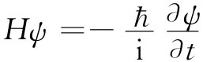

流经一柱体那种流动的复杂而易变的特性并不特殊，而各种各样的流动可能性却会普遍地发生，这是有可能加以演示的。在第一节中我们曾经对两个圆筒间的黏性流动算出了一个解，并能够把这一结果与实际发生的情况进行比较。若取两个同心的圆筒，在它们之间的空隙里装进油，并放进一些铝粉以作为油中的悬浮物，这样流动就可容易观察到。现在，若缓慢地转动外筒，并不会有什么意料之外的事情发生，这可从图41-8（a）上看到。相反，若慢慢转动内筒，也不会有十分显著的事情发生。然而，若以较高速率转动内筒，则我们会感到惊奇，流体已破裂成一些水平带，如图41-8（b）所指出来的那样。当外筒以一相似速率转动而保持内筒静止不动时，却没有这种效应发生。怎么可能在转动内筒或转动外筒之间存在这种差别呢？毕竟，我们在第一节中导出的那种流动图样只依赖于ωb -ωa 。我们可以通过对图41-9所示截面的考察而得到答案。当内层流体比外层流体运动得快时，它们趋向于向外运动——离心力大于把它们固定在适当位置上的压强。因为外层的阻塞，所以整层流体不可能均匀地向外移动，因此就必然会破裂成小格并做环流，如图41-9（b）所示。就像房间里底部空气较热时所发生的对流。当内筒不动而外筒高速转动时，离心力会建立起把一切都保持在平衡状态的压强梯度——见图41-9（c）（正如在一间顶部空气较热的房子里那样）。
图41-8 在两个透明的旋转圆筒间液体流动的花样
图41-9 为什么流动会破裂成带状
现在让我们提高内筒的转速。起初，带的数目增加。然后突然你会看到那些带变成波浪形状，如图41-8（c）所示，而这些波正在环绕着筒行进。波的速率很容易测量出来。对于相当高的转速来说，这波速会接近于内筒速率的三分之一。但没有谁能知其所以然！这就存在一种挑战，一个像1/3的简单数目，还得不到任何解释。事实上，这种波形成的整个机制并未得到很好理解，而它却是一种定常层流。
如果我们现在也开始转动外筒——但是沿相反方向——则该流动花样开始破裂，所获得的乃是波浪形状区域与表面上静止的区域相互交替的一种情形，如图41-8（d）所示意的那样，构成一种螺旋式的花样。然而，在这些“静止”区中，我们能够看到流动实在是很不规则的，它实际上完全是湍流，而那些波浪形状区也开始表现出无规的湍流了。如果内外筒继而转得更快，则整个流动便会变成混沌的湍流了。
在这个简单的实验中，我们看到了许多有趣的、完全不同的流动状态，但它们却全都包含在一个参数R取不同数值的简单方程中。利用上面的旋转圆筒，能看到发生于流经柱体的流动中的许多效应：首先，有一种定常流动；其次，开始出现一种随时间变化的、但仍以有规则而又平滑的方式进行的流动；最后，流动就变成完全无规的了。你们大家都曾在平静空气里，从点燃着的一支纸烟升起的一股烟柱中看到相同的效应。有一股平滑而稳定的烟柱，接着当这股烟流开始破裂时就有一系列的扭转和弯曲，最后才形成一股无规的涡流烟云。
从所有这些实验中我们能够学到的主要经验是，一大堆不同的行为都隐藏在式（41.23）那组简单的方程中。所有的解都属于同样的方程组，仅有不同的R值。我们并没有理由认为在这些方程式中会有任何遗漏的项。唯一的困难在于，今天除了十分小的雷诺数——即完全黏性的那种情况——以外，我们仍然缺乏数学本领对各种情况进行分析。我们虽然写下了一个方程，但这并不会从流体的流动中除掉它的魅力、它的神秘或它的令人惊异之处。
若在只有一个参数的简单方程中这样的变化是可能的话，那么对于更加复杂的方程可能性是多么多啊！也许用以描述旋涡星云以及那些正在凝结、旋转、爆炸的众星球和众银河的基本方程，正好就是关于几乎为纯氢气的流体动力学行为的简单方程。经常有某些对物理学怀着毫无根据的恐惧心理的人会说，你不可能写出关于生命的一个方程。噢，也许我们能够。事实上，当我们写出量子力学的方程

时，我们就很可能已经有了足够近似的方程。刚才已经看到，事情的复杂性能够那么容易而又戏剧性地被用来描写它们的那些方程的简单性所忘记。人们往往还未认识到一些简单方程的适用范围，就得出结论，解释世界的复杂性所需要的除非上帝，而仅仅有方程是不行的。
我们已写出了关于水流动的方程组。从实验方面来说，也找到了一组用来讨论其解的概念和近似方法——涡街、湍性尾流、边界层等等。当我们在一种不那么熟悉的、而同时又还未能做出实验的情况下拥有相似的方程组时，就企图按照一种原始、不完全和混乱的方式求解那些方程，希望确定有什么新的定性特点可能会出现，或有什么新的定性形式是那些方程的结果。例如，当我们把太阳作为一个氢气球看待时，方程式把太阳描绘成没有太阳黑子、表面没有谷粒状结构，也没有太阳红焰和日冕。可是，所有这些，实际上都存在于该方程之中，只是我们还未找到借以获得它们的方法罢了。
还有一些人对于在其他行星上尚未找到生物而感到失望。我却不是那种人——我希望能通过行星际探索，以及从这么简单的原理就能产生出那种变化无穷而又新奇的各种现象，再次受到启发、受到鼓舞，并感到惊异。科学的检验标准乃是其预言的本领。假如你从未探望过地球，难道你能预言雷电、火山、海涛、极光以及五彩缤纷的晚霞吗？当我们获悉在那些死寂的行星——八个或十个球体——上每一个所发生的一切事情时，即每个都由同一种尘埃云所凝聚而成，而且每个又都遵循着完全相同的物理规律，那将是有益的一课。
下一个人类智慧的伟大启蒙期，很可能会产生出一种理解方程的定性 内容的方法。目前我们还不能够。今天不能看出那个水的流动方程会含有人们在两个转动圆筒间所见得到的、像理发店门前的旋转招牌那样的湍流结构。今天还不能看出薛定谔方程是否包含青蛙、音乐作曲家或者伦理道德——也许它不会。对于超越事情本身范围的、像上帝那样的某些事情，我们不可能说需要还是不需要，因而我们都可以就这两种情况保持自己的坚定信念。
[1] 你能够 将大 的尘埃粒子从桌面上吹掉，但不能 吹去十分微细的灰尘，那些大的才会掉进到微风里去。
[2] 若情况不真实，你可以想象：虽然在理论上玻璃是一种“液体”，但肯定能够把它制造得沿钢面滑动。因此，我们的说法必然会在某处失效。